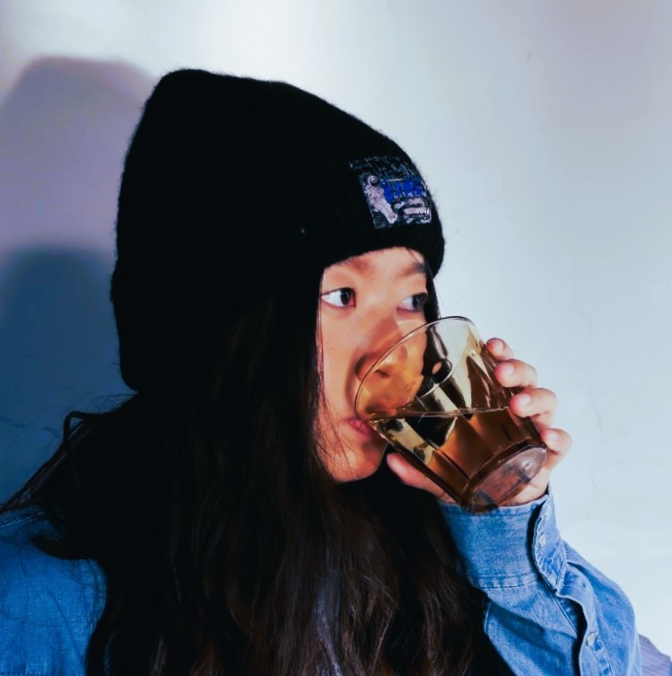

About Me
Hello! I'm Fangyi, a UX Designer and Researcher with a passion for creating user-centered solutions. With a background in Psychology and Data Science, I bring a unique perspective to my design process, focusing on data-driven insights to enhance user experiences.
My journey into UX design began with a fascination for understanding human behavior and how technology can be designed to meet users' needs effectively. Over the years, I've honed my skills in user research, wireframing, prototyping, and usability testing.
When I'm not designing, you can find me exploring new technologies, reading about the latest trends in UX, or enjoying outdoor activities. I'm always eager to connect with like-minded professionals and collaborate on exciting projects.